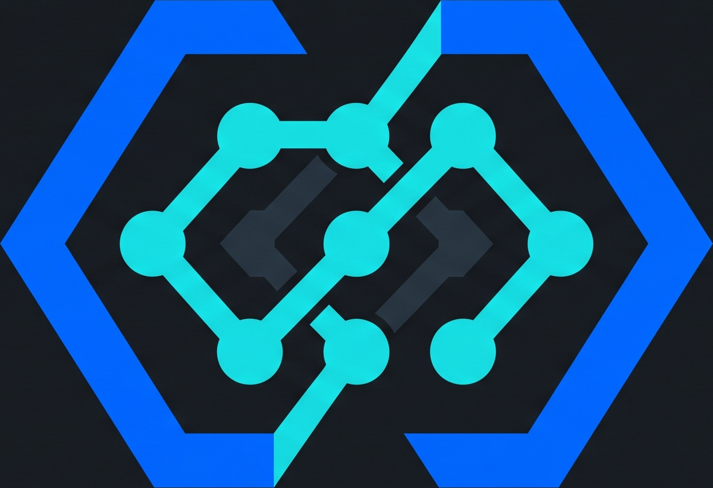

TokenGatewayDeadline besok.
Skill kamu
sampai mana?
AI bisa bantu ngerjain. Kamu tetap perlu paham yang dikerjain.
Bangun.
Buktiin.AI untuk mahasiswa
21 Oktober 2026
Kamu tim
yang mana?
Baru buka AI
pas panik.
Sering pakai.
Masih copy-paste.
Sudah bikin
sesuatu sendiri.
Angkat tangan. Semua boleh mulai dari titik yang berbeda.
AI sudah masuk
keseharian kerja.
Pekerja dalam survei global PwC memakai AI di tempat kerja dalam 12 bulan terakhir.
Perusahaan juga
takut kalah cepat.
CEO menyebut kecepatan transformasi mengikuti teknologi, termasuk AI, sebagai kekhawatiran utama.
Perubahannya cepat.
Belajarnya berlanjut.
Pengguna AI dalam survei Microsoft takut tertinggal jika tidak cepat memakai AI untuk beradaptasi.
Tugas hari ini.
Portofolio besok.
Bangun fitur.
Uji kodenya.
Bedah masalah.
Jelaskan keputusan.
Mulai dari satu masalah kampus yang kamu kenal.
Jangan berhenti
di “jawabannya ada”.
Kasih konteks
Apa tujuanmu?
Uji hasilnya
Mana buktinya?
Jelaskan balik
Kamu paham?
Tujuan + konteks + batasan
+ bentuk hasil.
Saya mahasiswa semester 3, sedang belajar Python. Bantu analisis CSV pengeluaran dummy dengan kolom tanggal, kategori, dan nominal. Jangan mengarang data kosong. Berikan kode pandas, cara mengecek total, lalu jelaskan hasil dengan bahasa sederhana.
Kamu mau
bikin apa?
Sistem &
teknologi
Data · AI · aplikasi · engineering
Bisnis &
manusia
Keuangan · komunikasi · desain · perilaku
Tekan O. Pilih jurusanmu. Langsung masuk contohnya.
Bangun sistemnya.
Uji cara kerjanya.
Pilih contoh yang dekat dengan jurusanmu. Setiap slide berdiri sendiri.
Baca pola.
Cek angkanya.
CSV berantakan
Bawa pulangDashboard yang bisa dijelaskan
Cocokkan total ke data mentah. Cegah data leakage saat mencoba prediksi.
Bikin asisten.
Ukur jawabannya.
Dokumen kegiatan
Bawa pulangAsisten FAQ dengan rujukan
Pisahkan data evaluasi. Catat jawaban salah dan sumber yang dipakai.
Error ketemu.
Fix-nya paham.
Input transaksi salah
Bawa pulangFitur valid + kasus uji
Jalankan test dan baca perubahan kode. Jangan simpan API key di frontend.
Dari kebutuhan
ke alur yang jelas.
Peminjaman alat manual
Bawa pulangAlur persetujuan + skema data
Cek aturan dengan pengguna. Uji izin akses dan status transaksi.
Sensor nyala.
Datanya cerita apa?
Log sensor dummy
Bawa pulangGrafik daya + asumsi energi
Cek satuan, interval sampling, dan asumsi faktor daya. Validasi dengan dosen atau lab.
Antreannya panjang.
Macetnya di mana?
Antrean kantin
Bawa pulangPerbandingan skenario layanan
Jalankan simulasi berulang. Bedakan hasil model dari observasi lapangan.
Sampah tercatat.
Aksinya lebih tepat.
Catatan sampah acara
Bawa pulangRencana pengurangan berbasis data
Cek data timbangan dan metode sampling. Faktor emisi harus punya sumber.
Paham masalahnya.
Perkuat keputusanmu.
Pilih contoh yang dekat dengan jurusanmu. Setiap slide berdiri sendiri.
Baca bisnisnya.
Uji asumsinya.
Laporan perusahaan
Bawa pulangRasio + skenario proyeksi
Hitung ulang di spreadsheet. Ini latihan akademik, bukan rekomendasi investasi.
Totalnya beda?
Telusuri buktinya.
Dua catatan transaksi
Bawa pulangDaftar selisih yang perlu dicek
Cocokkan ke bukti transaksi. Selisih adalah petunjuk pemeriksaan, bukan bukti fraud.
Satu acara.
Tiga cara bercerita.
Brief acara kampus
Bawa pulangPesan untuk tiga audiens
Verifikasi tanggal, narasumber, dan kutipan. Uji pemahaman pada teman.
Idenya menarik.
Buktinya apa?
Dua ide penawaran
Bawa pulangEksperimen kecil yang terukur
Uji pada pengguna nyata. Jangan menyimpulkan dari klik yang terlalu sedikit.
Mau buka usaha?
Hitung dulu.
Rencana bazar kampus
Bawa pulangAnggaran + rencana operasi
Cek angka dengan spreadsheet dan harga pemasok. Proyeksi bukan penjualan aktual.
Banyak opsi.
Satu arah yang kuat.
Brief acara kampus
Bawa pulangTiga arah konsep visual
Desain final tetap dikerjakan di tool desain. Cek hak aset, lisensi, dan keterbacaan.
Klausul abu-abu?
Tanya lebih tajam.
Kontrak fiktif
Bawa pulangDaftar isu untuk diskusi kelas
Buka aturan dan putusan resmi yang relevan. Diskusikan dengan dosen; bukan opini hukum final.
Temukan tema.
Jangan buru-buru label.
Wawancara sintetis
Bawa pulangTema + kutipan pendukung
Gunakan data sintetis atau anonim. Bandingkan coding dengan pembaca lain dan bimbingan dosen.
“Bikinin aplikasi”
masih terlalu luas.
Bantu rancang fitur tambah pengeluaran. Pakai React + TypeScript. Simpan lokal untuk latihan. Sebelum menulis kode, jelaskan struktur data dan 4 kasus uji. Jangan tambahkan login dulu.
Angkanya rapi.
Sudah dicek?
AI bisa salah.
Kamu yang cek.
Tech bikin alurnya.
Semua bisa pakai hasilnya.
Mau eksplorasi AI.
Dompet ikut mikir.
Buat budget mahasiswa, langganan beberapa aplikasi sekaligus bisa terasa berat.
Harga referensi AS, bulanan reguler; pajak, wilayah, promo, dan penawaran mahasiswa dapat berbeda. Ada opsi gratis. Ini langganan aplikasi, dengan fitur berbeda dari paket API TokenGateway.
Ide kamu.
Dikasih akses AI.
Pilih paket. Bayar QRIS. Hubungkan API.
Akses mengikuti paket, akun dan API key. Bukan langganan aplikasi premium pihak lain.
Mulai dari
Harga paket. Belum termasuk biaya layanan checkout.
Pembayaran: QRIS
Buat mulai belajar request API dan mencoba proyek kecil.
Kuota token bukan jumlah prompt. Pemakaian nyata bergantung pada input, output, dan aturan layanan.
Token itu
potongan teks.
Ilustrasi pemotongan saja. Tokenisasi sebenarnya berbeda menurut model dan bahasa.
Mulai dari tugasnya.
Baru pilih modelnya.
Arah eksperimen, bukan hasil benchmark. Uji kualitas pada kasus sendiri. Nama dan versi mengikuti label katalog gateway.
Satu paket.
Beberapa pilihan model.
| Paket & akses model | Kuota token | Berlaku | Harga paket |
|---|---|---|---|
| Paket Kilat All-Star Flashdeepseek-v4.1-flash · glm-5.3-flash · qwen3.8-flash | 100 juta | 10 hari | Rp24.000 |
| Paket Super Flashdeepseek-v4.1-flash · glm-5.3-flash · qwen3.8-flash | 300 juta | 14 hari | Rp39.000 |
| Paket Coder & Architectdeepseek-v4-pro · qwen3-coder · qwen3.8-flash | 50 juta | 14 hari | Rp35.000 |
| Paket Deep Reasoningdeepseek-v4-pro · glm-5.3 | 40 juta | 14 hari | Rp39.000 |
| Paket Generasi GPT-6 Frontier 20Mgpt-6-astra · gpt-6-luna · gpt-6-sol · gpt-6.1-sol | 20 juta | 14 hari | Rp69.000 |
| Paket Generasi GPT-6 Frontier 30Mgpt-6-astra · gpt-6-luna · gpt-6-sol · gpt-6.1-sol | 30 juta | 21 hari | Rp129.000 |
Belum termasuk biaya layanan checkout. Akses mengikuti paket, akun, dan API key. Kuota bundling mengikuti ketentuan layanan.
Mulai kecil.
Atau eksplorasi lebih jauh.
| Paket & akses model | Kuota token | Berlaku | Harga paket |
|---|---|---|---|
| Pass Kilat GLM 5.3 Flash 50Mglm-5.3-flash | 50 juta | 7 hari | Rp10.000 |
| Pass GLM 5.3 Flash 120Mglm-5.3-flash | 120 juta | 10 hari | Rp22.000 |
| Pass DeepSeek Flash 150Mdeepseek-v4-flash · deepseek-v4.1-flash | 150 juta | 10 hari | Rp22.000 |
| Pass GLM 5.2 Fast 60Mglm-5.2 | 60 juta | 10 hari | Rp24.000 |
| Pass Titan Flash 1 Miliardeepseek-v4.1-flash | 1 miliar | 30 hari | Rp95.000 |
Belum termasuk biaya layanan checkout. Akses mengikuti paket, akun, dan API key. Kuota bundling mengikuti ketentuan layanan.
Buat coding.
Buat mikir lebih dalam.
| Paket & akses model | Kuota token | Berlaku | Harga paket |
|---|---|---|---|
| Pass Qwen 3 Coder 60Mqwen3-coder | 60 juta | 14 hari | Rp25.000 |
| Pass DeepSeek V4 Pro 65Mdeepseek-v4-pro | 65 juta | 14 hari | Rp32.000 |
| Pass GLM 5.3 Reasoning 40Mglm-5.3 | 40 juta | 14 hari | Rp32.000 |
| Pass Gemini 3.7 Flash 60Mgemini-3.7-flash | 60 juta | 10 hari | Rp25.000 |
| Pass Gemini 3.8 Flash 50Mgemini-3.8-flash | 50 juta | 10 hari | Rp27.000 |
Belum termasuk biaya layanan checkout. Akses mengikuti paket, akun, dan API key. Kuota bundling mengikuti ketentuan layanan.
Pilihan lain untuk
proyek berikutnya.
| Paket & akses model | Kuota token | Berlaku | Harga paket |
|---|---|---|---|
| Pass GPT-6 Luna 60Mgpt-6-luna | 60 juta | 10 hari | Rp30.000 |
| Pass GPT-6 Sol 50Mgpt-6-sol | 50 juta | 14 hari | Rp35.000 |
| Pass GPT-6.1 Sol Flagship 25Mgpt-6.1-sol | 25 juta | 14 hari | Rp49.000 |
| Pass GPT-6 Astra Flagship 15Mgpt-6-astra | 15 juta | 14 hari | Rp65.000 |
| Pass Kimi K3 Flagship 50Mkimi-k3 | 50 juta | 10 hari | Rp29.000 |
Belum termasuk biaya layanan checkout. Akses mengikuti paket, akun, dan API key. Kuota bundling mengikuti ketentuan layanan.
Belum perlu
beli semuanya.
GLM 5.3 Flash 50M
Rp10.00050 juta token · 7 hari
Coder & Architect
Rp35.00050 juta token · 14 hari
Kilat All-Star Flash
Rp24.000100 juta token · 10 hari
Contoh pilihan awal, bukan jaminan kecocokan. Harga paket belum termasuk biaya layanan checkout. Detail model ada di katalog sebelumnya.
Siapin proyeknya.
Hubungkan API-nya.
Daftar & verifikasi
Buka website dan verifikasi email sebelum membeli.
Pilih & bayar
Cek model, kuota, masa berlaku, dan total checkout. Bayar QRIS.
Buat API key
Gunakan console. Simpan key di environment server.
Kirim & pantau
Pilih model yang diizinkan, coba request, lalu cek usage.
Alur berdasarkan dokumentasi publik. Konfigurasi coding tool mengikuti versi dan dukungan endpoint masing-masing.
Satu request.
Awal proyek kamu.
import os
from openai import OpenAI
client = OpenAI(
api_key=os.environ["TOKEN_GATEWAY_API_KEY"],
base_url="https://tokengateway.ai.id/v1",
)
result = client.chat.completions.create(
model="glm-5.3-flash",
messages=[{"role": "user", "content":
"Jelaskan fungsi Python untuk pemula."}],
)
print(result.choices[0].message.content)Masalah kecil.
Karya nyata.
Pilih → bikin → uji → demo
AI sudah masuk
cara orang bekerja.
Kamu mulai dari mana?
Pilih satu proyek. Beri instruksi yang jelas. Cek hasilnya. Bangun skill-nya.
Lihat paket TokenGateway ↗